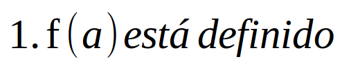
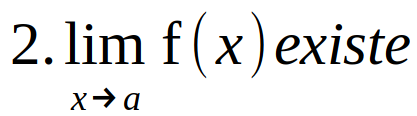
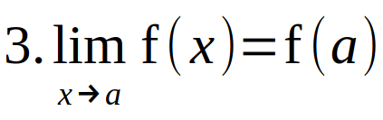
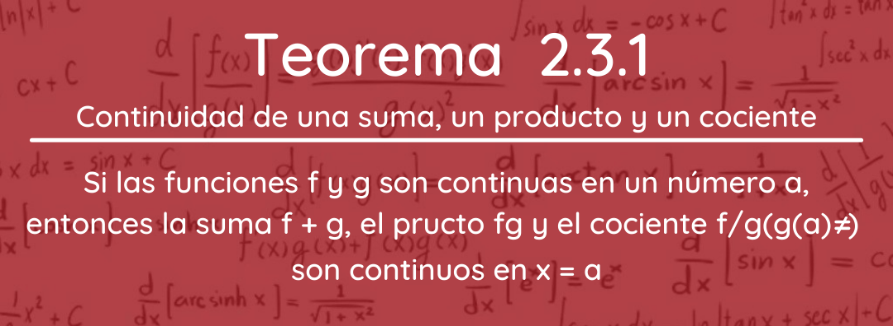
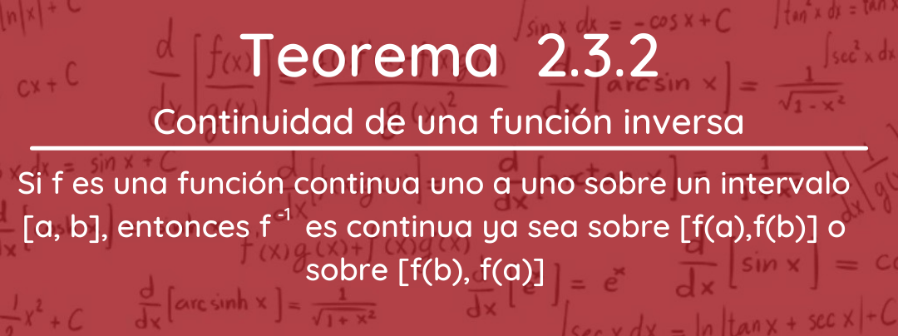
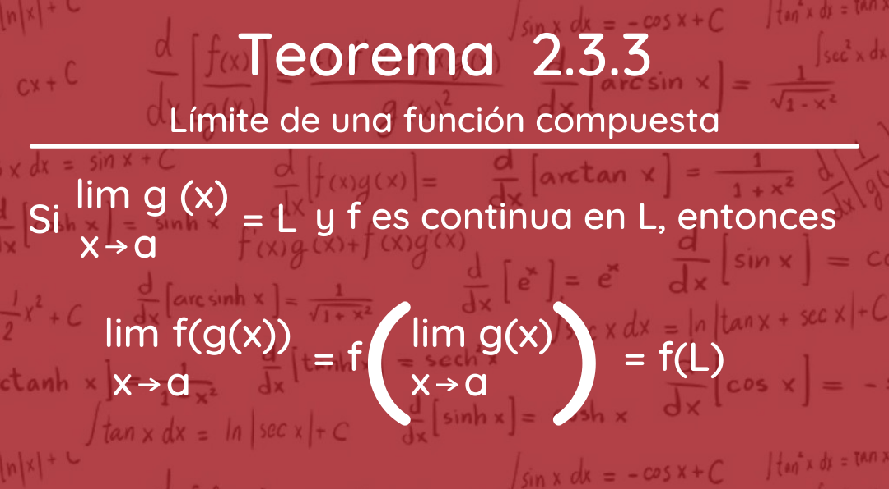
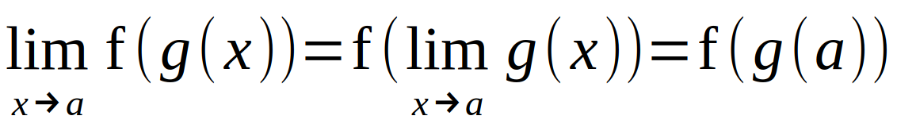
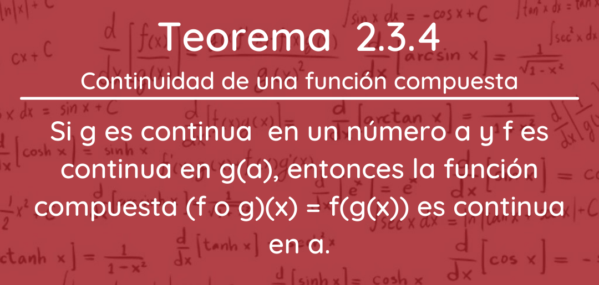
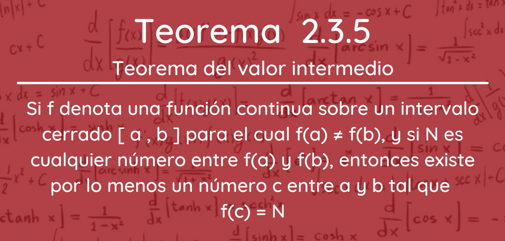

Una función es continua en un número a cuando se cumpla lo siguiente:
  Si alguna de las condiciones anteriores no se cumple, entonces decimos que la función presentada es descontinua.
Una función f es continua:
i) Sobre un intervalo abierto (a, b) si es continua en todo número en el intervalo;
y
ii) Sobre un intervalo cerrado [a, b] si es continua en (a, b) y, además,
Si se cumple la primera condición se dice que f es continua en la derecha a, entonces f es continua por la izquierda en b
.
Cuando dos funciones f y g son continuas en un número a, entonces la combinación de las funciones formadas por suma, multiplicación y división también es continua en a. En el caso de la división f/g es necesario, por supuesto, requerir que g(a) ≠ 0.
Para que el siguiente teorema se indica que la gráfica de la función inversa f -1 se considera de la gráfica de f en la recta y = x
Se establece que si una función es continua, entonces el límite de esa función es la función del límite.
Si la función g es continua en a y f es continua en g(a), entonces vemos:
Esto significa que la composición de dos funciones continuas es continua.
Una función continua f es aquella que no omite ningún valor.
El método de bisección es el procedimiento de aproximar un cero de una función continua haciendo uso de una sucesión de puntos medios.